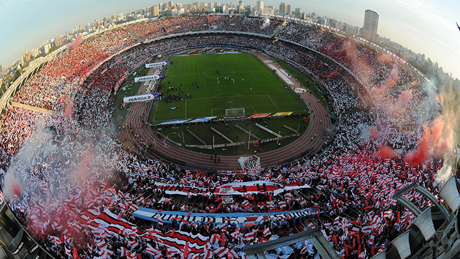
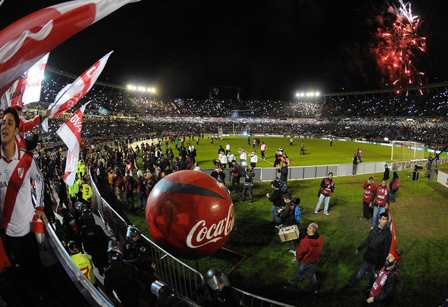
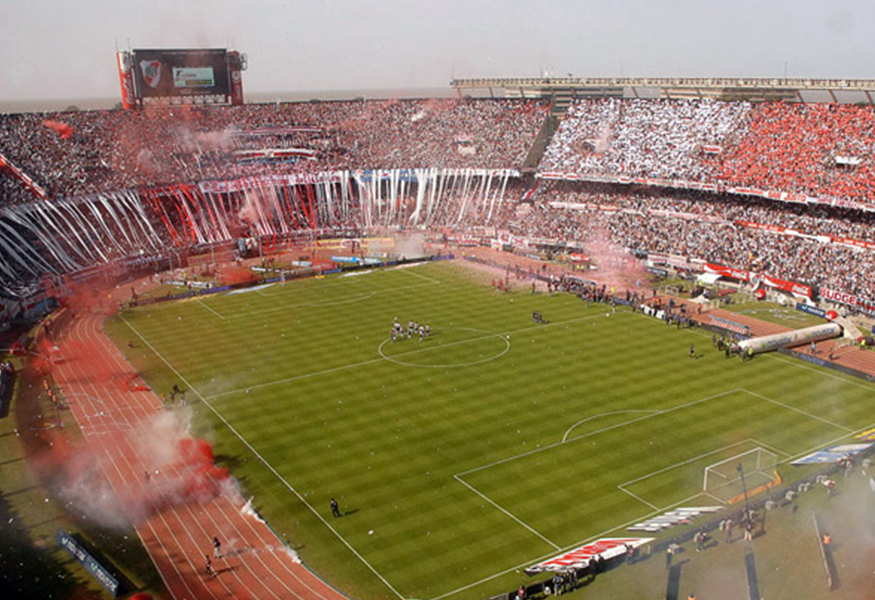
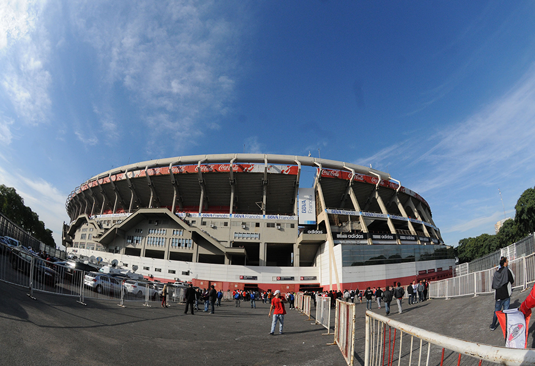
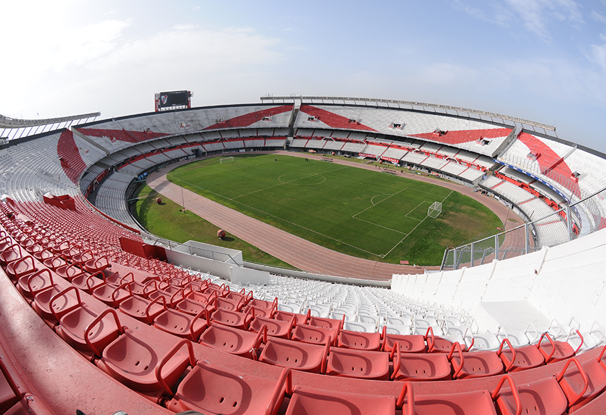

"EL MOMUMENTAL"
Estadio Antonio Vespucio Liberti
Es nuestra casa. Una casa gigantesca en la que gritamos, nos emocionamos, lloramos y nos abrazamos a miles de desconocidos para festejar un gol agonico. En cada uno de sus rincones se esconden incontables historias: algunas populares y públicas; otras secretas y privadas. Goles electrizantes, vueltas olimpicas, jugadas memorables, aniversarios, partidos inolvidables. En definitiva, el Monumental es sinónimo de incalculables recuerdos que guardaremos por siempre en nuestros corazones.
Visitantes de todo el planeta viajan miles de kilómetros solo para tocar sus muros, como si se tratase de un templo. Pero ello no sorprende: despues de todo, el Monumental es una de las mecas del fútbol mundial y en sus gradas se reúnen todas las semanas, desde hace mas de 75 años, miles de feligreses para celebrar la fiesta del fútbol.
El gigante de cemento —que forma parte indiscutible de la geografia de la ciudad— es, tambien, una escultura viviente. En sus entrañas, el Club late y respira. En los vestuarios, en la piscina olimpica, en las cafeterias, en las salas rebalsadas de trofeos, en los salones decorados con murales de Benito Quinquela Martin —que representan los primeros años del Club en el barrio de la Boca—. El Monumental es una obra maestra de la ingenieria, de la arquitectura… una obra maestra del arte. Y es nuestro preciado hogar.
SU HISTORIA
Cuando en 1933 Antonio Vespucio Liberti asumio su primera presidencia en el Club, una idea alocada comenzó a rondar su mente: construir el estadio mas grande de la Argentina. Para aquel entonces, los viejos tablones de la cancha de Alvear y Tagle quedaban chicos para albergar a la comunidad de hinchas riverplatenses que todos los domingos abarrotaban las tribunas.
Fue asi como el 31 de octubre de 1934 se firmaron los boletos de compra de los terrenos de 83.950 metros cuadrados ubicados en el barrio de Núñez. ¿El precio? 569.403 pesos. El 25 de mayo del año siguiente, además de celebrar un nuevo aniversario del Club, los dirigentes colocaron la piedra fundamental y el 27 de septiembre del 36 comenzaron las obras bajo la direccion del estudio Aslan y Ezcurra Arquitectos.
Si bien el costo de la obra fue presupuestado en 4.479.545,80 pesos, se decidio postergar la construccion de la cabecera norte con el fin de financiar las tareas de mejor manera. Las tribunas que se levantaron en esta primera etapa fueron la Oficial, la Centenario (que daba a la avenida del mismo nombre, hoy Figueroa Alcorta) y la Rio de La Plata (actualmente llamada Belgrano). La altura de las tribunas era de 32 metros. Ademas, en el campo de juego se construyo una pista olimpica de 400 metros de largo y se edificaron vestuarios, gimnasios y salones para la práctica de diversos deportes y actividades sociales.
El 26 de mayo de 1938, 70.000 personas —una cifra nunca vista antes en el fútbol argentino— llenaron el nuevo estadio para presenciar la inauguracion del Monumental. River venció a Peñarol por 3-1 y formó de la siguiente manera: Sirni; Vassini y Cuello; Malazzo, Minella y Wergifker; Peucelle, Vaschetto, Ferreyra, Moreno y Pedernera. ¿Quién fue el primero en marcar un gol en el joven estadio? Carlos Peucelle, uno de los primeros héroes del profesionalismo. Al suyo le siguio un tanto del gran Bernabe Ferreyra y otro más del genial Charro Moreno. Mejor inauguracion, imposible…
En 1941, River obtuvo el título en el cemento de Nuñez. Sería el primer eslabon de una cadena plagada de alegrías que parece no tener fin. La “herradura” —como se conocia popularmente al estadio— se cerró parcialmente en 1958 bajo la presidencia de Enrique Pardo, gracias a la venta de Enrique Omar Sívori a la Juventus de Italia por 10 millones de pesos.
Con el correr de los años, ademas de ser el hogar de todos los riverplatenses, el Monumental se convirtió en la casa de la Seleccion Nacional y, por lo tanto, de todos los simpatizantes del fútbol vernáculo. Fue escenario, entre muchos otros encuentros memorables, de aquel famoso Argentina 3 - Inglaterra 1, en 1953, con el “gol imposible” de Ernesto Grillo (la primera vez que Argentina logró vencer a los “padres del fútbol”).
Desde luego, el mayor hito del conjunto nacional se produjo en 1978. Ya en la “herradura” definitivamente cerrada —para el Mundial se construyo la tribuna Almirante Brown alta—, Argentina grito campeon en el Monumental. Daniel Alberto Passarella levanto la Copa y el combinado conducido por Cesar Luis Menotti dio la vuelta olimpica ante un estadio desbordado de algarabia y pasion.
El 29 de noviembre de 1986, el estadio fue rebautizado con el nombre de su mentor: Antonio Vespucio Liberti.
ESPECTÁCULOS Y RECITALES
Si bien durante años el Monumental estuvo asociado casi exclusivamente a espectáculos deportivos, en las últimas decadas abrió sus puertas para organizar recitales y festivales musicales. Tocar en este estadio es todo un privilegio y un honor. Y la frase “llenar un River” pasó a significar exito artistico.
Entre las decenas de bandas y solistas, tanto de la Argentina como del extranjero, que han pisado el escenario del Monumental podemos nombrar a Paul McCartney, Madonna, Michael Jackson, Sting, Bob Dylan, Peter Gabriel, Rod Stewart, Eric Clapton, David Bowie, Prince, Guns n Roses, Elton John, Serú Girán, Kiss, The Ramones, Luis Miguel, Enrique Iglesias, U2, Metallica, Patricio Rey y sus Redonditos de Ricota, La Renga, Red Hot Chili Peppers, Los Piojos, Shakira, Robbie Williams, Aerosmith, Bersuit Vergarabat, Chayanne, High School Musical, Ozzy Osbourne, Los Fabulosos Cadillacs, Bon Jovi, Jonas Brothers y Coldplay, entre otros.
Algunos casos son sorprendentes. Como el de los Rolling Stones, quienes tocaron 12 veces en sus tres visitas a la Argentina en 1995, 1998 y 2006. O el de Soda Stereo, que, tras la reunión de la banda en 2007 con su gira “Me verás volver”, abarrotó la cancha de River en seis oportunidades. El record de actuaciones, sin embargo, lo tiene Roger Waters. El músico ingles llenó dos veces el estadio de Nuñez en 2007 cuando presentó su show “Dark Side Of The Moon”. Pero cuando volvio al pais, cinco años mas tarde, se agotaron las entradas para sus nueve (¡si, nueve!) conciertos.
GALERIA DE FOTOS




